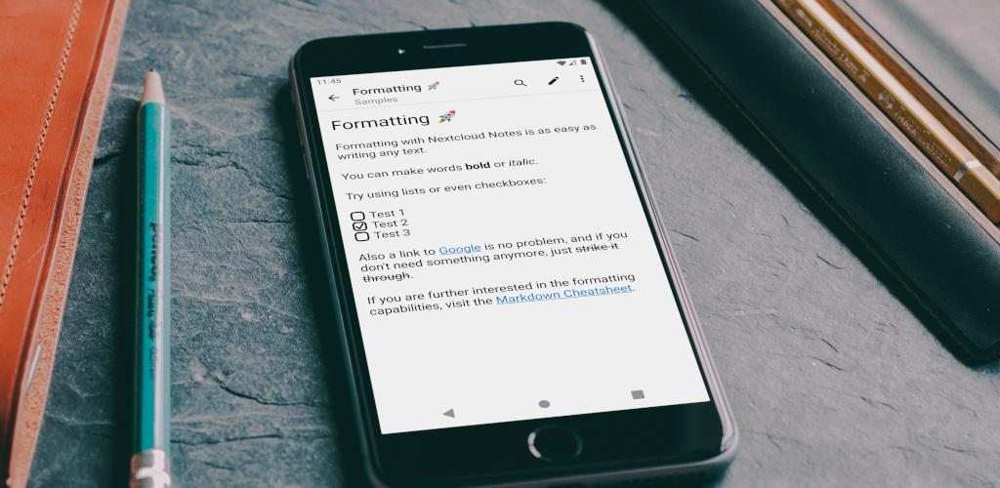
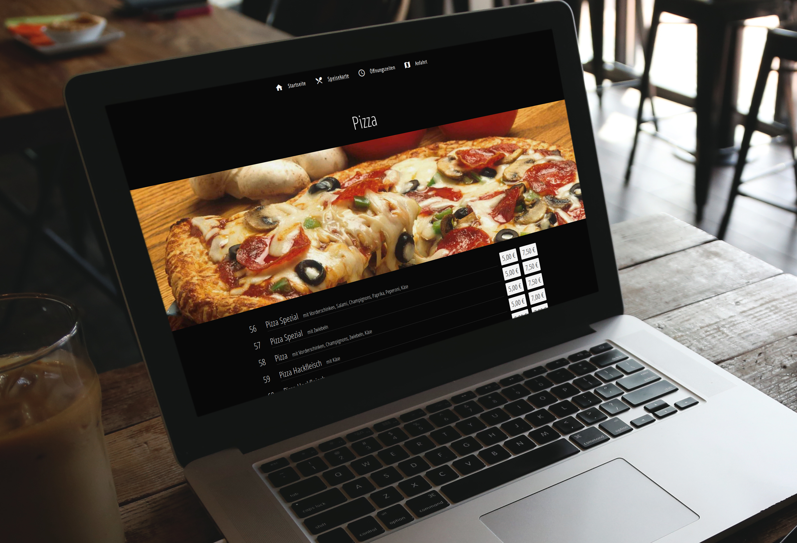
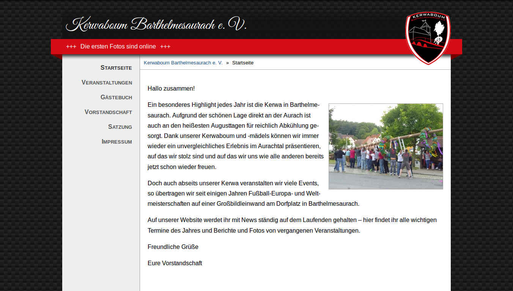
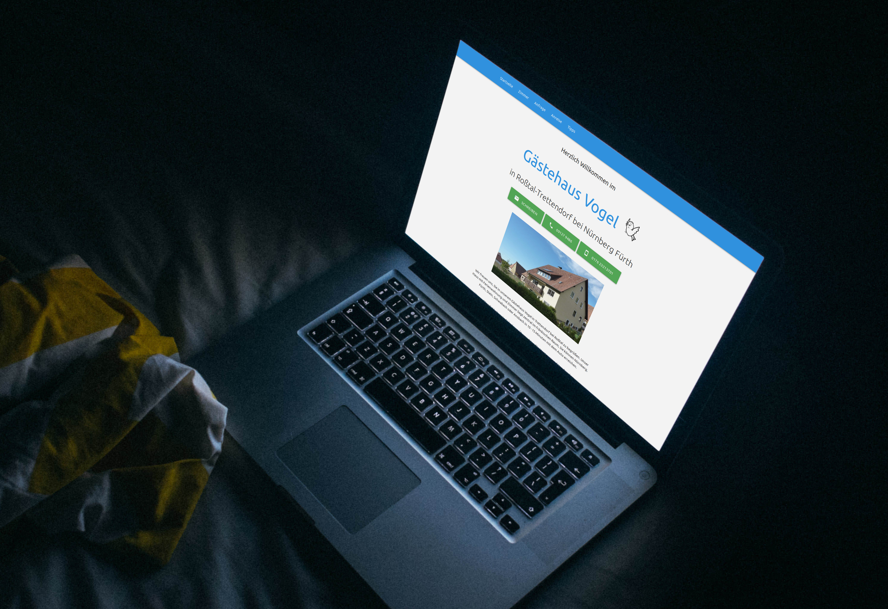
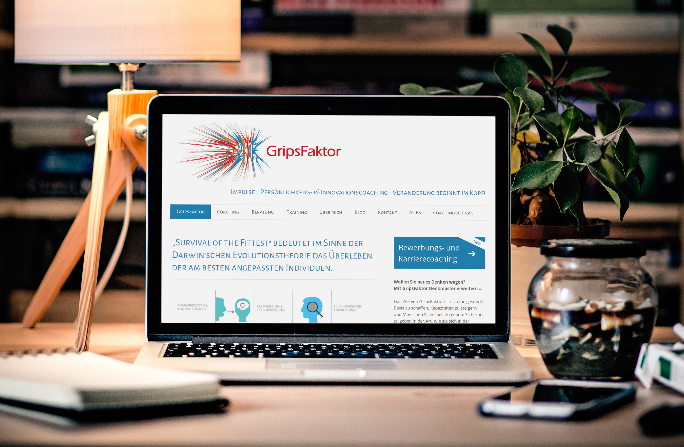
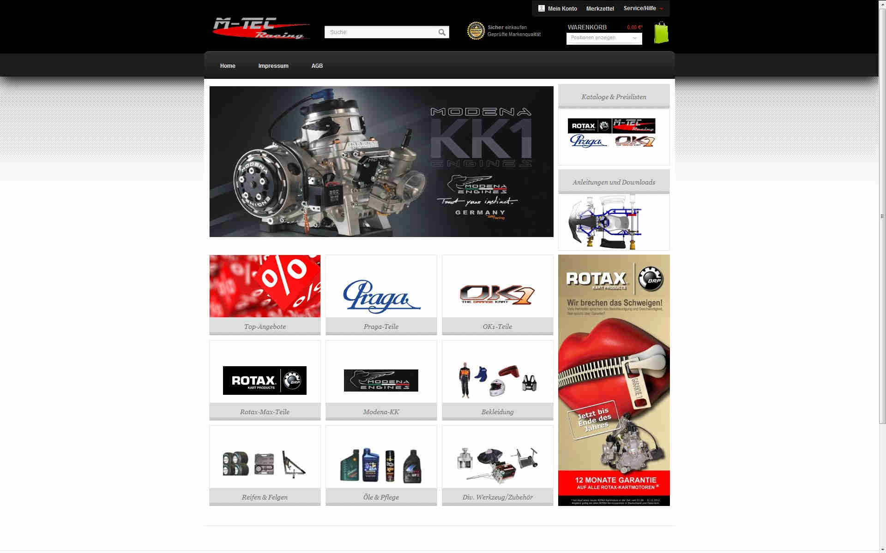

Nextcloud Notes (Android App)
- Anzeigen, Erstellen, Editieren und Löschen von Notizen
- Teilen von Text und Links als neue Notiz und Teilen von bestehenden Notizen
- Synchronisierung mit einer Nextcloud-Instanz
- MarkDown-Live-Vorschau
- 5000+ Downloads
- Auf GitHub und im Play Store



Nextcloud Deck (Android App)
- Einfache Projekt-Organisation für Teams
- Erlaubt das Erstellen und Verwalten von Aufgaben
- Synchronisierung mit einer Nextcloud-Instanz
- Unterstützt Anhänge, Kommentare und Tags
- 1000+ Downloads
- Auf GitHub und im Play Store

Kerwaboum Barthelmesaurach e. V.


Gripsfaktor
- Link: http://www.gripsfaktor.de/
- Erstellung eigener Jimdo-Widgets zur Erweiterung der Standard-Funktionalität
- Search-Engine Optimization


Die G'selligen Aurachtaler e. V.